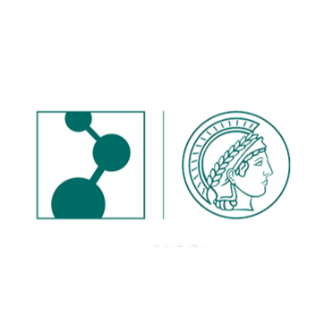
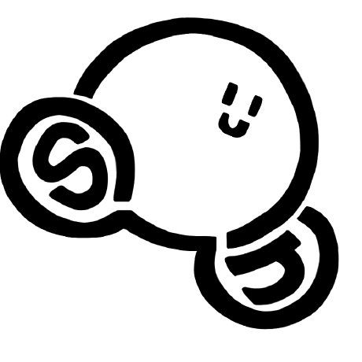
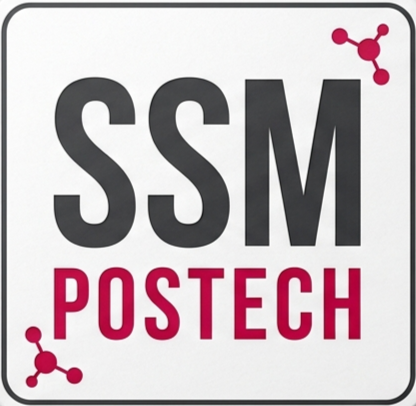
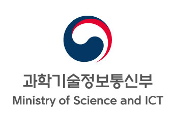
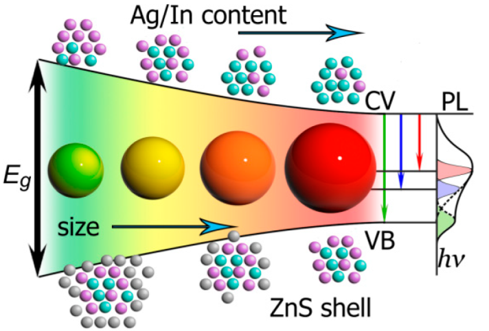

Hi, I'm Yungyeom An.
A Materials Scientist | Soft Matter & Interfacial Systems
I am interested in how molecular-scale interactions change the structure and behavior of soft matter systems, including polymers, interfacial assemblies and hydrogels.
My work combines molecular simulations, synthesis, and spectroscopy to understand structure–property relationships in soft matter systems.
About
I am a materials scientist interested in how molecular parameters govern the design rule of functional soft materials. I want to study how weak and dynamic intermolecular and interfacial interactions translate into macroscopic material behavior and structure-property relationships. I also want to extend this to biologically relevant systems.
My previous work combines experimental characterization and molecular simulations to probe these connections across diverse soft matter systems. I have worked on a range of systems including hydrogen bonding in water, interfacial interactions in polymers, electrostatic effects in confined ionic liquids, and self-assembled soft materials.
I received my B.S. in Chemistry from POSTECH and I will begin my Ph.D. in Fall 2026. Currently, I am finalizing my research manuscript at the Kimoon Kim Research Group. I am also working as an intern at the Ministry of Science and ICT, where I engage with the broader research ecosystem.
With experience in both experimental and computational approaches, I enjoy working across disciplines and discussing awesome ideas with people from different backgrounds.
Experience
Center for Self-assembly and Complexiy
JUL '22 – FEB '23 | NOV '25 – CONT. (15 MOS.)
Led the project on programmable spatiotemporal control in non-equilibrium chemical systems
My Role
- • Project Researcher (Co-first author): led a research project on programmable spatiotemporal pattern in chemical processes.
- • Experimental Design: designed and optimized experimental setups and chemical compositions for dynamic pattern formation.
- • Modeling & Analysis: developed a MATLAB-based numerical model and ImageJ pipeline to quantify pattern evolution.
- • Manuscript Preparation: co-first author of a manuscript in preparation for submission to a peer-reviewed journal.
Output & Activities
- • Poster Presentation: 130th General Meeting of the Korean Chemical Society (KCS), Gyeongju, Korea (2022).
- • Manuscript: co-first author paper in preparation.
- • Research Communication: delivered regular presentations during group meetings.
Poster: Korean Chemical Society (KCS) Conf. /

Max Planck Institute for Polymer Research
AUG '23 – MAY '24 (10 MOS.)
Led the sub-project on asymmetry and anti-correlation of hydrogen bonds in liquid water
My Role
- • Project Researcher: conducted an independent study on hydrogen-bond asymmetry and its relation to vibrational anti-correlation in liquid water.
- • Simulation & Spectroscopy: performed temperature-dependent FTIR measurements and molecular dynamics simulations (GROMACS) to probe hydrogen-bond dynamics.
- • Data Analysis: analyzed MD trajectories and vibrational spectra to quantify hydrogen-bond correlations and their structural origins.
- • Scientific Discussion: interpreted results in the context of complementary 2D IR and DFT studies through regular discussions.
Output & Activities
- • Scientific Findings: investigated the structural origin of hydrogen-bond correlations in liquid water.
- • Research Communication: presented and discussed results in internal group meetings.
/

Computational Energy & Bio Soft Materials Lab
FEB '23 – JUN '23 (4 MOS.)
Led the project on image charge effect on ionic liquid confined in Graphene
My Role
- • Project Researcher: Led an independent investigation titled "Image charge effect on ionic liquid confined in Graphene."
- • Computational Simulation Engineering: Completed advanced MD simulation with OpenMM including water model characterization, Umbrella Sampling for free energy calculation, and Protein Folding simulations
- • Data Analysis: Developed Python-based workflows for trajectory analysis and MSD/RDF calculations.
Output & Activities
- • Comparative Analysis: Evaluated the structural and dynamical impact of image charge on EMIM/BF4 and BMIM/BF4 systems.
- • Research Communication: Presented research findings and simulation methodologies during internal lab seminars
Poster: Korean Chemical Society (KCS) Conf. /

Smart Soft Materials Lab
SEP '24 – DEC '24 (4 MOS.)
Worked on the development of lignin-based hydrogel adhesives in collaboration with a senior researcher
My Role
- • Synthesis & Formulation: synthesized candidate monomers and explored composition space for hydrogel formation and adhesion performance.
- • Characterization: evaluated mechanical and adhesive properties using rheology and viscoelastic analysis.
- • Optimization: contributed to formulation optimization by comparing structure–property relationships across different compositions.
- • Exploratory Work: participated in early-stage experiments for an eco-friendly hydrogel synthesis approach, including setup optimization and feasibility testing.
Output & Activities
- • Data Analysis: Generated and compared datasets on mechanical and adhesive properties across formulations.
- • Research Communication: Shared results and progress within the research group.
Poster: Korean Chemical Society (KCS) Conf. /

Ministry of Science and ICT
MAR '26 – CONT.
Supporting research and policy-related tasks. Data review, document preparation, and project coordination tasks.
Projects

Kimoon Kim Research Group, POSTECH
Problem
Precise spatiotemporal control of chemical processes remains challenging, existing systems rely on emergent dynamics or intrinsic kinetics, making programmable control over where and when reactions occur difficult to achieve.
Approach
Using audible sound as a non-invasive external stimulus, I design Faraday waves at the air–liquid interface via multi-frequency sound. The resulting spatially structured vibration fields modulate gas dissolution, creating programmable concentration gradients and distinct chemical domains.
Key Insight
By mathematically designing mixed-frequency sound, desired spatial patterns become predictable and tunable. This enables multi-step reaction control, selective spot-wise activation, and life-like compartmentalization, mimicking biological spatial organization in a synthetic system.

Liquid Dynamics Group in AK Bonn, MPIP
Problem
Water's anomalous properties stem from its hydrogen bond network, yet the origin of intramolecular asymmetry — where one O–H bond is stronger than the other within the same molecule — remains poorly quantified.
Approach
Temperature-dependent FTIR on isotopically diluted HOD/D₂O in DMF (to prevent coupling), paired with MD simulations (SPC/E & SWM4-NDP). Hydrogen bond distribution and dynamics was analyzed by introducing a custom asymmetry parameter to compare the two HB arms within each molecule.
Key Insight
Confirmed anti-correlation of the HBs in a water molecule in simulation, showing anti-correlation is an intrinsic molecular property rather than a thermal fluctuation. Identified a distinct population of highly asymmetric molecules tied to transiently non-bonded OH arms.

Son Research Group, POSTECH
Problem
The role of image charge interactions at interfaces remains elusive in ionic liquids, where complex many-body effects often obscure classical predictions, such as ion correlations and solvent screening.
Approach
MD simulations of graphene-ionic liquid interfaces using a hybrid continuum-atomistic framework were employed with and without applied voltage (0V vs. 1V) and across ionic liquid systems (EMIM/BF₄, BMIM/BF₄, Li-doped variants). A mirror-expanded symmetry algorithm was utilized to dynamically control image charge interactions.
Key Insight
At zero voltage, image charge effects are screened by solvent polarization, producing negligible differences in ion profiles. Under applied voltage, surface polarization sharpens interfacial ion peaks and enhancing charge separation. Ionic liquid molecular size further modulates interfacial layering, with bulkier cations forming less compact layers.

Son Research Group, POSTECH

Smart Soft Matter Group, POSTECH
Problem
Conventional medical adhesives struggle to maintain adhesion in wet, dynamic biological environments, and often contain toxic components. Meanwhile, lignin, which is produced in vast quantities as a biorefinery byproduct, remains largely underutilized.
Approach
Synthesized hydrogels from lignocellulosic biomass, leveraging hydrogen bonding, π–π stacking, and cation–π interactions with zwitterionic monomers to form a robust polymer network.
Key Insight
Lignogel maintains structural stability and strong adhesion in wet conditions without swelling. It demonstrates antioxidant, antibacterial, wound-healing, and electroconductive properties, making it a promising multifunctional biomedical platform and a high-value upcycling route for lignin waste.

Nanotrio Research Group, POSTECH
Problem
Organic fluorescent dyes are limited by photobleaching and low efficiency, while high-performance Cd or Pb based QDs have toxicity risks for clinical use. Meanwhile, distinguishing tumor from healthy tissue in real time during surgery remains challenging.
Approach
Synthesized heavy-metal-free AgInS₂/ZnS QDs with tunable NIR emission via compositional and temperature control. After surface modification for aqueous stability and biocompatibility, antibodies targeting cancer-specific biomarkers were conjugated for in vivo imaging.
Key Insight
Demonstrated a non-toxic, broadly tunable NIR QD platform with suppressed tissue autofluorescence and high SNR. Zwitterionic encapsulation supports stable circulation in biological environments, and mechanistic control of quenching enables sequential multi-biomarker detection in a single imaging session.

Mentorship & Service
(This section is currently updating!)
Mentorship
- Mentor for General Chemistry (CHEM101), POSTECH.
- Mentor for Organic Chemistry (CHEM221), POSTECH.
- Mentor for Middle School Students in a Community-based Urban Regeneration Program.
Science communication
I had worked as a reporter, including serving as Editor-in-Chief, at The POSTECH Times for three years.
I am particularly interested in translating scientific knowledge into accessible narratives and reducing the gap between research and the public.
During this time, I edited research articles contributed by scientists, and wrote pieces including researcher interviews, news reports, and press-based articles.
Selected articles are listed below. (only in Korean).
- Interview with Nobel Laureate Dan Shechtman
- Popular Academic Article on Fluorescence Sensors
- Research Highlight on MOF fabrication strategy
Service
I strive to contribute to the STEM society for a more inclusive environment.
• I served at Women's Student Council, POSTECH, contributing to policy discussions and budgeting to support women in STEM and improve communication channels.
Education
Pohang University of Science and Technology (POSTECH)
Pohang, South Korea
Degree: Bachelor of Science in Chemistry
GPA: 4.08/4.3 (3.92/4.0 in U.S. Equivalent)
graduate at the top of the class